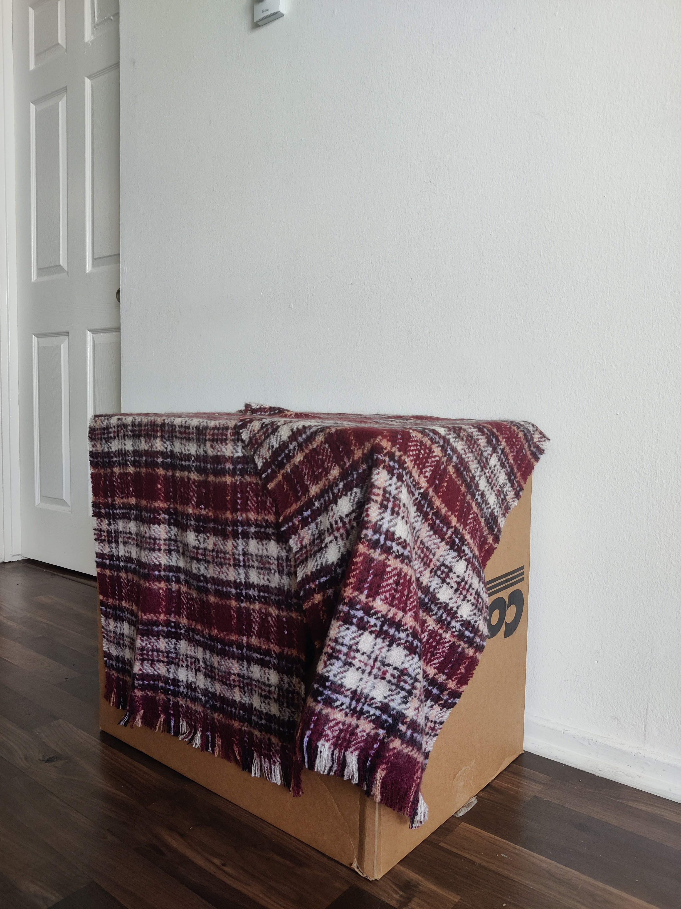
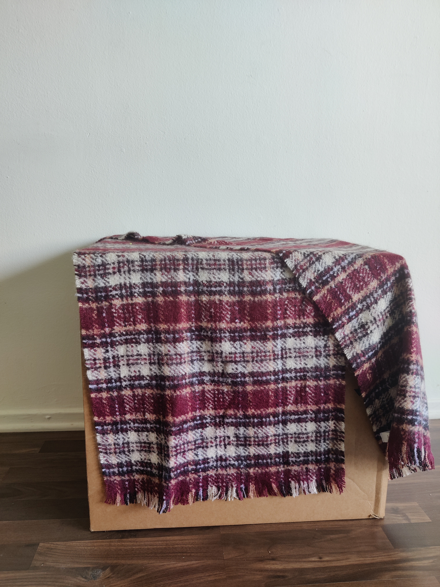
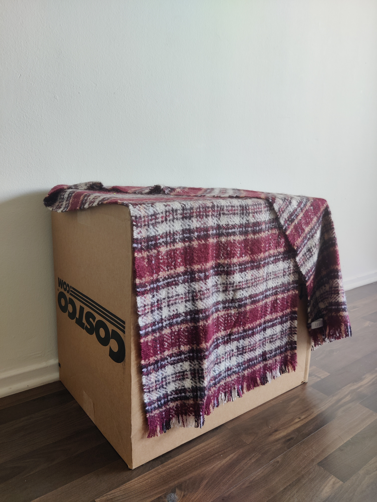

Assignment 2
Introduction
For this assignment, you will be implementing Structure from Motion.
- Feature Matching
- Structure from Motion
We have made available a visualization tool using the Three.js library implemented in "./js/assignment2.js" and an example implementation located in "./assignments/assignment2.py". Your objective is to fill in TODOs in the python files and make modification based on it. You are encouraged to use a programming language with which you are comfortable. The output results should be in the ply format, and you must visualize your outcomes accordingly.
How to Submit: Please submit this template file along with your implementation as a zip file. The zip file should contain your source code, the generated results in PLY mesh format, and a report that has been modified using this HTML file. The report should comprise your results and a concise explanation of your implementation. Alternatively, you may choose to create a GitHub repository containing all these elements and provide a link for submission.
Requirements / Rubric: The grading is based on the correctness of your implementation. You are encouraged to use the visualization tool to debug your implementation. You can also use the visualization tool to test your implementation on other 3D models.
- +80 pts: Implement the structure-from-motion algorithm with the start code.
- +20 pts: Write up your project, algorithms, reporting results (reprojection error) and visualisations, compare your reconstruction with open source software Colmap.
- +10 pts: Extra credit (see below)
- -5*n pts: Lose 5 points for every time (after the first) you do not follow the instructions for the hand in format
Extract Credit: You are free to complete any extra credit:
- up to 5 pts: Present results with your own captured data.
- up to 10 pts: Implement Bundle Adjustment in incremental SFM.
- up to 10 pts: Implement multi-view stereo (dense reconstruction).
- up to 20 pts: Create mobile apps to turn your SFM to a scanner.
- up to 10 pts: Any extra efforts you build on top of basic SFM.
Structure From Motion
My implementation
Structure from motion (SfM) is the process of estimating the 3-D structure of a scene from a set of 2-D images.
The algorithm comprises of the following steps:
- Matching and Outlier rejection using RANSAC
- Estimating Fundamental Matrix
- Estimating Essential Matrix from Fundamental Matrix
- Estimate Camera Pose from Essential Matrix
- Check for Cheirality Condition using Triangulation
- Perspective-n-Point
The implementation is noisy due to outliers and lack of bundle adjustment.
The details of the implementation are as follows:
Type: Incremental SfM without bundle Adjustment for Fountain-P11
Vertices: 13140
Mean Reprojection Error: 4.727
Time Taken: 8.13 s
Colmap implementation
Type: Incremental SfM with bundle Adjustment
Along with the steps in the above implementation, Colmap also performs bundle adjustment in the incremental SfM.
In Bundle Adjustment, once you have computed all the camera poses and 3D points, we need to refine the poses and 3D points together,
initialized by previous reconstruction by minimizing reporjection error.
Vertices: 14776
Time Taken: 21.42 s
My implementation of Entry-P10
Type: Incremental SfM without bundle Adjustment for Entry-P10
Vertices: 15951
Mean Reprojection Error: 27.823
Time Taken: 9.969 s
Colmap of Entry-P10
Vertices: 12193
Extra Credit: Present results with your own captured data.



My implementation
Type: Incremental SfM without bundle Adjustment
Vertices: 68198
Mean Reprojection Error: 173.31
Time Taken: 33.46 s
Comments: The 3D scene of my implementation of the box seems to be noisy because of lack of
bundle adjustment performed. It can also be due to low quality of images.
Colmap of Box
Vertices: 10107
Colmap performs better because of Bundle Adjustment as there are way lesser outliers.